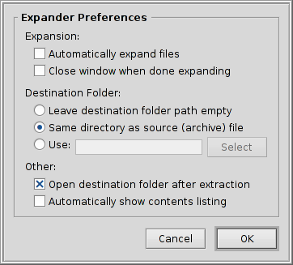

Français
Français Català
Català Deutsch
Deutsch English
English Español
Español Italiano
Italiano Magyar
Magyar Polski
Polski Português
Português Português (Brazil)
Português (Brazil) Română
Română Slovenčina
Slovenčina Suomi
Suomi Svenska
Svenska 中文 ［中文］
中文 ［中文］ Русский
Русский Українська
Українська 日本語
日本語 Expander
Expander
| Deskbar : | Pas d'entrée : normalement, un double clic sur les fichiers pris en charge assure le lancement. | |
| Localisation : | /boot/system/apps/Expander | |
| Réglages : | ~/config/settings/Expander_Settings |
Expander est un petit outil pour décompresser rapidement les archives les plus courantes, parmi lesquelles, zip, gzip, bzip2, rar et tar.gz.
Il suffit de double-cliquer sur une archive pour obtenir cette interface simple :

| Alt O | Ouvre la boite de dialogue d'ouverture de fichiers pour vous permettre de trouver l'archive à décompresser. | |
| Alt D | Ouvre la boite de dialogue des fichiers pour définir la destination. | |
| Alt E | démarre la décompression. Celle-ci peut être interrompue avec Alt K. |
Vous pouvez basculer vers l'affichage avec la liste des fichiers en cochant Show Contents ou en pressant ALT L.
Expander ne peut décompresser que des archives entières.
Vous ne pouvez pas extraire ou supprimer de l'archive un fichier seul, ni en ajouter un.
Vous ne pouvez pas extraire ou supprimer de l'archive un fichier seul, ni en ajouter un.
ou Alt S ouvre un panneau de préférences qui offre quelques paramètres utiles pour ajuster le comportement de l'Expander.
Les options parlent d'elles-même :
